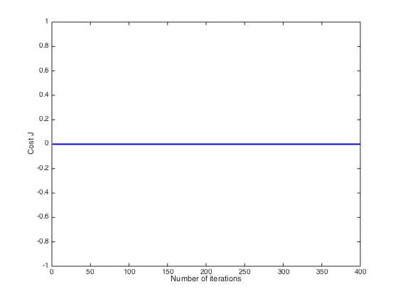

Machine Learning Online Class
Exercise 1: Linear regression with multiple variables
Instructions
------------
This file contains code that helps you get started on the
linear regression exercise.
You will need to complete the following functions in this
exericse:
warmUpExercise.m
plotData.m
gradientDescent.m
computeCost.m
gradientDescentMulti.m
computeCostMulti.m
featureNormalize.m
normalEqn.m
For this part of the exercise, you will need to change some
parts of the code below for various experiments (e.g., changing
learning rates).
Contents
Initialization
================ Part 1: Feature Normalization ================
Clear and Close Figures
clear ; close all; clc
fprintf('Loading data ...\n');
Loading data ...
Load Data
data = load('ex1data2.txt');
X = data(:, 1:2);
y = data(:, 3);
m = length(y);
fprintf('First 10 examples from the dataset: \n');
fprintf(' x = [%.0f %.0f], y = %.0f \n', [X(1:10,:) y(1:10,:)]');
fprintf('Program paused. Press enter to continue.\n');
pause;
fprintf('Normalizing Features ...\n');
[X mu sigma] = featureNormalize(X);
X = [ones(m, 1) X];
First 10 examples from the dataset:
x = [2104 3], y = 399900
x = [1600 3], y = 329900
x = [2400 3], y = 369000
x = [1416 2], y = 232000
x = [3000 4], y = 539900
x = [1985 4], y = 299900
x = [1534 3], y = 314900
x = [1427 3], y = 198999
x = [1380 3], y = 212000
x = [1494 3], y = 242500
Program paused. Press enter to continue.
Normalizing Features ...
================ Part 2: Gradient Descent ================
fprintf('Running gradient descent ...\n');
alpha = 0.01;
num_iters = 400;
theta = zeros(3, 1);
[theta, J_history] = gradientDescentMulti(X, y, theta, alpha, num_iters);
figure;
plot(1:numel(J_history), J_history, '-b', 'LineWidth', 2);
xlabel('Number of iterations');
ylabel('Cost J');
fprintf('Theta computed from gradient descent: \n');
fprintf(' %f \n', theta);
fprintf('\n');
price = 0;
fprintf(['Predicted price of a 1650 sq-ft, 3 br house ' ...
'(using gradient descent):\n $%f\n'], price);
fprintf('Program paused. Press enter to continue.\n');
pause;
Running gradient descent ...
Theta computed from gradient descent:
0.000000
0.000000
0.000000
Predicted price of a 1650 sq-ft, 3 br house (using gradient descent):
$0.000000
Program paused. Press enter to continue.

================ Part 3: Normal Equations ================
fprintf('Solving with normal equations...\n');
Solving with normal equations...
Load Data
data = csvread('ex1data2.txt');
X = data(:, 1:2);
y = data(:, 3);
m = length(y);
X = [ones(m, 1) X];
theta = normalEqn(X, y);
fprintf('Theta computed from the normal equations: \n');
fprintf(' %f \n', theta);
fprintf('\n');
price = 0;
fprintf(['Predicted price of a 1650 sq-ft, 3 br house ' ...
'(using normal equations):\n $%f\n'], price);
Theta computed from the normal equations:
0.000000
0.000000
0.000000
Predicted price of a 1650 sq-ft, 3 br house (using normal equations):
$0.000000